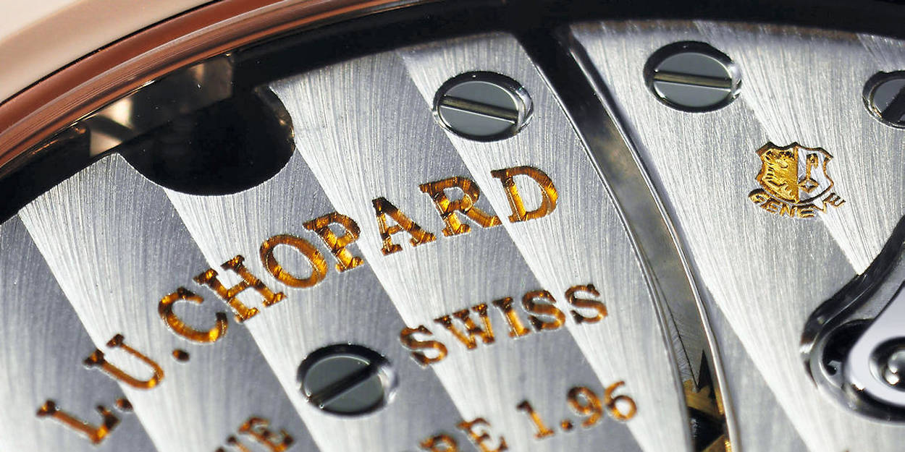

Lexique horloger

Chers lecteurs,
J’ose imaginer que vous savez tous ce qu’est un bracelet, des aiguilles, etc. Mais je me doute que vous avez également entendu des termes plus farfelus les uns-que les autres concernant les montres. 😄
Comme une multitude de domaines, l’horlogie dispose d’un vocabulaire technique qui lui est propre. C’est pourquoi, il sera question ici de proposer une liste le plus exhaustive soit-elle, du vocabulaire holorger.
Lexique :
ATM
Abbréviation d’ « atmosphère normale », ATM est une unité de pression indiquant l’étanchéité d’une montre. Par exemple, une montre offrant une étanchéité de 10ATM résiste à une pression de 10 bars, soit 100 mètres de profondeur. Cependant, c’est une indication à ne pas prendre au premier degré. Par exemple, la plongée requiert une capacité de 20ATM minimum.
Alternance
Déplacement d’un pendule ou d’un balancier entre deux positions extrêmes (A’ > A »). Deux alternances, soit un aller-retour, constituent une oscillation, soit le fameux « tic-tac » d’une montre.En règle générale, un balancier compte 5 oscillations par seconde (fréquence de marche de 18,000 alternances à l’heure – 2,5Hz), 8 oscillations par seconde (fréquence de marche de 28,800 alternances à l’heure – 4Hz) ou 10 oscillations par seconde (fréquence de marche de 36,000 alternances à l’heure – 5Hz).
Amagnétique
Se dit d’une montre dont le fonctionnement des organes réglants ne sont pas affectés par le magnétisme. La majorité des pièces d’horlogerie étant fabriquées à partir de métaux et d’alliages ferreux, celles-ci sont habituellement déréglées par les champs magnétiques. La définition d’une montre antimagnétique est régie par la norme ISO 764, celle-ci devant être apte à fonctionner après une exposition accidentelle à un champ de 4800 A/m (soit 60 gauss).
Amplitude
Angle maximum entre les deux positions extrêmes d’une pendule ou d’un balancier (A>A »). Cela équivaut au trajet complet effectué par le balancier lors d’une alternance. En règle générale, l’amplitude d’un balancier se situe entre 180° et 315°. Si l’amplitude dépasse cette valeur, le balancier peut buter contre la fourchette, ce que les horlogers appellent le rabattement.
Applique
Les appliques sont les index ou marquages découpés dans une plaque métallique puis apposés à même le cadran, soit par collage ou par rivetage.
Balancier
Élément mobile généralement de forme circulaire, c’est l’organe qui règle la montre. Celui-ci oscille sur son axe de rotation et est accouplé au spiral, ressort lui permettant d’imprimer un mouvement de va-et-vient parfaitement régulier, appelé oscillation (le fameux « tic-tac »). Dans le cas des montres à quartz, le spiral est remplacé par un moteur électrique alimenté par une pile.
Bar
Unité de pression atmosphérique de référence, 1 bar soit 1013 hectopascals, c’est un terme permettant d’indiquer l’étanchéité d’une montre (voir aussi ATM).
Bar
Unité de pression atmosphérique de référence, 1 bar soit 1013 hectopascals, c’est un terme permettant d’indiquer l’étanchéité d’une montre (voir aussi ATM).
Barillet
Le barillet est un ensemble formé d’une boîte cylindrique et d’une roue dentée fermée par un couvercle. Il permet d’accumuler l’énergie produite par le système de remontage pour ensuite la redistribuer aux différents engrenages du mouvement.
Boîtier
Le boîtier (ou boîte) est la principale protection d’une montre et permet de protéger le mécanisme contre les chocs, l’humidité ainsi que la poussière. Il est composé d’une partie principale appelée carrure contenant le mouvement, le cadran et les aiguilles, à laquelle sont fixés les divers éléments extérieurs.
Boucle ardillon
La boucle ardillon est le type de fermoir le plus classique, composé d’une pointe métallique articulée sur une boucle permettant de fermer le bracelet grâce à une perforation dans le brin percé.
Boucle déployante
La boucle déployante est un fermoir articulé qui se déploie lors de son ouverture. Elle permet notamment à la montre de flotter autour du poignet en cas d’ouverture accidentelle.
Cabochon
Désigne un type d’ornement utilisé sur la couronne et parfois sur le cadran. Il s’agit généralement d’une pierre précieuse ou fine, polie (et non taillée).
Cadran
Le cadran est une pièce généralement métallique sur laquelle s’affiche des indications diverses telles que les heures, minutes et secondes.
Carrure
La carrure est l’une des trois pièces maîtresses du boîtier qui accueille le mouvement. Elle se trouve entre le fond de boîte et la lunette de la montre.
Chemin de fer
Échelle de minuterie imprimée sur le cadran qui se distingue de par sa ressemblance avec les rails d’un chemin de fer.
Chronocomparateur
Appareil d’horloger permettant de tester rapidement la marche d’une montre, généralement en 1 à 3 minutes, grâce au son généré par les chocs de l’échappement. Ceux-ci sont ensuite transformés en émissions de courant éléctrique variable puis amplifiés. Un chronocomparateur permet notamment de de vérifier la précision d’une montre puis de détecter des anomalies.
Chronographe
Un chronographe est une montre indiquant les heures, les minutes et les secondes, complétée d’une aiguille se mettant en marche/arrêt sur simple action d’un poussoir afin de mesurer la durée d’un événement. Il possède généralement des compteurs d’heures et minutes totalisant les tours de l’aiguille du chronographe.
Chronomètre
Plus qu’un simple appareil de mesure du temps, en horlogerie, un chronomètre désigne une montre de haute précision ayant obtenu une certification de chronométrie par une organisation spécialisée, neutre et officielle. On recense notamment le Contrôle Officiel Suisse des Chronomètres (COSC), l’observatoire de Genève ou celui de Neuchâtel mais aussi le METAS-Cert
Clous de Paris
Type de guillochage que l’on retrouve sur des cadrans très classiques, composé de lignes entrecroisée set creusées, formant de petites pyramides.
Coaxial
Par définition, le terme coaxial signifie « sur le même axe » et désigne donc un mouvement possédant plusieurs aiguilles sur le même axe (heures, minutes, secondes).
Complication
La complication désigne toute autre fonction qu’une montre peut posséder autre que l’indication des heures, minutes et secondes. Cela comprend par exemple le calendrier perpétuel, le tourbillon, les fuseaux horaires, le chronographe ou encore les phases de lune.
Corne
Solidaires de la carrure et situées aux extrémités du boîtier, les cornes ont pour fonction d’accrocher le bracelet à la montre. La petite barrette qui s’y loge grâce à de petits trous, passant aussi à l’intérieur du bracelet afin de le maintenir, est également appelée entre-corne.
COSC
Le Contrôle Officiel Suisse des Chronomètres (COSC), est une association à but non lucratif qui s’occupe de décerner le titre de chronomètre certifié. Pour cela, un système de mesures et de contrôles sur une durée de 15 jours a été rigoureusement mis en place afin de gager la fiabilité et la qualité des montres de manière individuelle (et non par collection). Pour une montre mécanique, l’écart de marche toléré selon les températures et positions testées se situe entre -4 et +6 secondes par jour.
Côtes de Genève
La décoration en côtes de Genève est un type de finition présent sur nombre de mouvements d’horlogerie, principalement pour les platines. Cette décoration est formée de stries parallèles, ondulées, usinées dans le métal à l’aide d’un outil rotatif abrasif qui effectue des passes successives parallèles. Ce type de finition est emblématique de l’horlogerie suisse depuis le fin du xixe siècle. Les sillons avaient historiquement le rôle de capturer les poussières afin d’éviter qu’elles viennent bloquer les engrenages, cependant la fonction de ces finitions est maintenant surtout décorative.
Couronne
La couronne (de remontoir) est un bouton présent à l’extérieur du boîtier permettant de remonter le mouvement manuellement ainsi que de régler l’heure de la montre.
Dauphine
Reprenant la forme d’un triangle effilé dont la forme se continue vers l’embase, les aiguilles dauphines affichent généralement un certain relief sur leur partie centrale, créant des facettes jouant avec les reflets de lumière.
Echappement
Désigne le mécanisme positionné entre le rouage (l’ensemble des roues et pignons transmettant la force depuis le barillet) et l’organe réglant (ou régulateur – soit le duo balancier et spiral – permettant la division en périodes de temps). L’échappement permet d’interrompre le mouvement des roues afin de distribuer l’énergie au balancier à intervalles réguliers. La quasi-totalité des montres suisses utilisent un échappement à ancre composé de 3 groupes de pièces : la roue d’échappement, l’ancre et le double plateau.
Emboîtage
Étape de l’assemblage d’une montre durant laquelle le mouvement est introduit puis fixé dans le boîtier.
Entre-Corne
Espace situé entre les cornes d’un boîtier de montre. Sa mesure détermine généralement la largeur du bracelet pouvant être fixé au boîtier. Dans certains cas, l’entre-corne est aussi utilisée pour désigner la tige métallique (pompe) permettant de fixer le bracelet.
Fly-Back
Aussi appelé « retour en vol », le fly-back est une fonction ayant été mise au point pour les pilotes d’avion, permettant de mesurer la durée d’un événement et de le remettre à zéro sans avoir à arrêter l’aiguille du chronographe.
Fourchette
Partie de l’ancre ressemblant à une fourchette et faisant la liaison entre le balancier et l’échappement.
Fréquence
Mesurée en hertz, la fréquence fait référence au nombre d’oscillations qu’effectue le balancier d’une montre en une seule seconde (généralement compris entre 5 et 10). Par vulgarisation, on la traduit souvent en nombre d’alternances par heure, soit 18000 (2,5Hz), 21600 (3Hz), 28800 (4Hz) ou 36000 (5Hz)
GMT
Abbréviation signifiant « Greenwich Mean Time ». Ce terme désigne l’heure solaire au méridien de l’observatoire de Greenwich en Angleterre, soit un temps civil d’une durée de 24 heures commençant à minuit. Sur une montre, la fonction GMT fait référence à l’affichage d’un second fuseau horaire de façon simultanée avec l’heure locale.
Gnomon
Le gnomon fut l’un des tout premiers dispositifs de mesure du temps. Ancêtre du cadran solaire, cet instrument astronomique est composé d’un corps placé à la verticale et projetant une ombre dont la longueur détermine les moments de la journée. Au lever et au coucher du soleil, elle est infinie tandis qu’elle est la plus courte à midi lorsque le soleil est à son plus haut.
Grande Date
Cette complication horlogère permet l’affichage de la date via deux disques distincts, contrairement à une date traditionnelle qui s’affiche sur un seul disque. Le résultat est une date surdimensionnée, d’où son nom de grande date.
Grande Sonnerie
Cette complication horlogère permet à la montre de sonner au passage des heures, mais également des quarts d’heure. Un bouton-poussoir permet d’activer la sonnerie à la demande. Le nombre de composants nécessaires à l’élaboration d’un tel mouvement en font la complication la plus complexe de toutes.
Grande Seconde
La grande seconde fait référence à la trotteuse, soit l’aiguille indiquant les secondes au centre d’une montre. Ce terme s’oppose à la petite seconde parfois placée dans un petit cadran à 6 heures.
Guichet
Petite ouverture située au niveau du cadran et sous laquelle est affichée diverses indications, notamment la date généralement à 3 heures. Un guichet peut aussi afficher d’autres informations telles que le jour, le mois, les phases lunaires, mais aussi les minutes/heures dans le cas d’une « montre à guichet ».
Guillochage
Technique de gravure, effectuée à la main avec un burin ou à la machine avec un tour à guillocher, permettant de décorer une surface métallique de lignes droites ou de courbes symétriques. Généralement présent sur les cadrans, le guillochage peut aussi être appliqué sur le boîtier d’une montre.
Hertz
Unité de mesure de fréquence d’un événement sur une seconde. En horlogerie, le Hertz (Hz) est utilisé pour mesurer la fréquence de marche d’un mouvement.
Heure Sautante
Se dit d’une montre dont l’indication de l’heure se fait dans un guichet (généralement situé à midi) et dont le changement d’heure s’effectue par saut toutes les 60 minutes. Cette complication a été inventée par l’horloger français Blondeau dans les années 1830.
Heure Universelle
Complication inventée par l’horloger suisse Louis Cottier, permettant à une montre d’afficher simultanément l’heure des 24 fuseaux horaires du monde. L’heure universelle (ou worldtimer en anglais) fonctionne grâce à un anneau rotatif gradué sur 24 heures qui pointe vers un anneau fixe marqué du nom des grandes villes qui représentent chaque fuseau.
Horloge Atomique
Horloge de très haute précision dont le dispositif oscillant utilise la fréquence des radiations émises entre deux niveaux d’énergie d’atomes. La plus précise d’entre elles dévie d’une seconde tous les 16 milliards d’années.
Incabloc
Marque déposée d’amortisseur de chocs permettant de conserver l’alignement des axes du balancier d’un mouvement mécanique. Composé d’un bloc renfermant un chaton, une pierre à trou, un contre-pivot et un ressort-lyre, ce système antichocs est le plus utilisé dans les calibres suisses.
Index
L’index fait référence à un certain marquage des heures, soit les repères ayant progressivement remplacé les chiffres romains ou arabes allant généralement de 1 à 12 sur le cadran.
Luminescence
Par définition la luminescence désigne l’émission de rayons de lumière. En horlogerie, il s’agit de la matière recouvrant l’index et les aiguilles permettant de lire l’heure dans l’obscurité. Le tritium fût la matière utilisée par le passé mais a été remplacée par le système LumiNova à cause de ses propriétés radioactives.
Luminova
Le LumiNova est une pâte lumineuse composée d’ampoules de tritum qui permet d’emmagasiner la lumière pour ensuite la refléter une fois plongée dans l’obscurité. Cette matière a permis d’écarter les sels de radium présentes dans le tritium et ainsi évincer la propriété radioactive de cette matière.
Lunaison
Aussi appelé mois lunaire, la lunaison désigne l’intervalle de temps séparant deux nouvelles lunes consécutives. Ce cycle complet fait approximativement 29,5 jours et se décompose en 8 phases : nouvelle lune, premier croissant, premier quartier, lune gibbeuse croissante, pleine lune, lune gibbeuse décroissante, dernier quartier et dernier croissant.
Lunette
La lunette est l’un des éléments principaux du boîtier. Elle se trouve sur la partie supérieure, au-dessus de la carrure, et porte la glace de la montre. Celle-ci peut être tournante afin d’indiquer diverses informations telles que la durée d’un événement. Lorsqu’elle est unidirectionnelle, elle ne tourne que dans un seul sens, notamment pour les montres de plongée.
Manufacture
Symbole de qualité en horlogerie, une manufacture désigne une fabrique produisant ses produits de manière artisanale, soit en quasi-totalité. Ce terme fait notamment écho à un mouvement entièrement développé par une marque.
Marteau
Le marteau est une pièce métallique qui frappe les timbres afin de les faire vibrer et ainsi produire des sons. C’est une pièce que l’on retrouve dans les montres à sonnerie.
Montre Mécanique
Une montre mécanique, en opposition à une montre à quartz, est une montre qui fonctionne sans pile. Elle est animée par un mouvement à remontage manuel, nécessitant d’être remonté tous les jours en tournant la couronne, ou automatique qui se remonte par les mouvements de la personne via un rotor tournant autour d’un axe.
Mouvement
Le mouvement d’une montre désigne l’ensemble des pièces et mécanisme la faisant fonctionner. Les différents types de mouvements sont appelés calibres.
NATO
Les bracelets NATO ont été mis au point en 1973 à la demande du Ministère de la Défense Britannique qui recherchait un bracelet résistant à toute épreuve afin d’équiper ses armées. Cette origine militaire résonne toujours dans leur nom : North Atlantic Treaty Organization (NATO ou OTAN en français).
Organe Réglant
Les organes réglants, aussi appelés régulateurs, désignent le balancier et le spiral qui fonctionnent avec l’échappement à ancre. Ils permettent le comptage du temps ainsi que la division en heures, minutes et secondes.
Oscillation
C’est le déplacement aller-retour d’un pendule ou d’un balancier entre deux positions extrêmes (A’ > A » > A’). Une oscillation est constituée de deux alternances, c’est le fameux tic-tac d’une montre.
Perpétuel
Le terme perpétuel fait référence au quantième perpétuel, soit l’affichage de la date par son numéro. Le calendrier perpétuel lui, est un type de complication permettant d’afficher le jour du mois ainsi que le mois sur le cadran d’une montre mécanique. Celui-ci tient compte des mois irréguliers de 31, 30, 29 ou 28 jours puis des années bissextiles.
Petite Seconde
Fonction permettant d’afficher les secondes dans un compteur déporté, contrairement à la grande seconde dont l’axe est situé au centre de la montre. On retrouve généralement la petite seconde à 6 ou 9 heures.
Pierre
Aussi appelé rubis (synthétiques), les pierres d’horlogerie permettent de diminuer les frottements au sein d’un mouvement mécanique. Fabriquées en corindon synthétique, elles se reconnaissent immédiatement de par leur couleur rouge-rosée. Cette même matière est également utilisée pour les palettes d’un échappement à ancre.
Phases de Lune
Les phases de lune sont une complication horlogère permettant l’affichage des diverses phases lunaires sur le cadran d’une montre. Une lunaison se divise en quatre phases : nouvelle lune, premier quartier, pleine lune et dernier quartier, effectuant un cycle complet en 29 jours, 12 heures, 44 minutes et 2,8 secondes.
Platine
Un mot pour deux définitions. La première désigne est un métal plus précieux que l’or, lourd et inoxydable, que l’on retrouve dans certaines montres de luxe. La seconde désigne la plaque qui soutient les ponts et les organes d’un mouvement mécanique, mais aussi sur laquelle repose le cadran; la platine est creusée et percée pour recevoir les pièces du mouvement.
Pont
Pièce métallique fixée sur la platine par les pieds et dans laquelle tournent les pivots mobiles du mouvement (barillet, roue de centre, renvoi, ancre, etc). Ses extrémités sont fixées par des vis.
Poinçon de Genève
Le Poinçon de Genève est le sceau de qualité horlogère instauré par le Grand Conseil du canton de Genève en 1886. Cette certification est un standard d’excellence et l’emblème de la haute-horlogerie genevoise, il garantit la provenance des montres, leur bienfacture et leur fiabilité.
Poussoir
Le poussoir désigne un bouton que l’on actionne afin de mettre un mécanisme en mouvement. Il permet notamment de commander l’ouverture d’un couvercle ou le démarrage/arrêt d’un chronographe.
Pulsomètre
Type de chronographe ou échelle de mesure permettant de compter les pulsations du coeur. Selon l’unité de référence, il suffit de déclencher le chronographe – ou d’attendre que la trotteuse soit à midi – puis de compter 15 ou 30 pulsation et de regarder l’échelle pulsométrique afin de connaître le rythme cardiaque. C’est une fonction qui était autrefois très utile pour les médecins et infirmières afin de leur éviter de compter les pulsation sur une minute complète
PVD
Acronyme de Physical Vapor Deposition, soit dépôt physique en phase vapeur, cette expression regroupe plusieurs méthodes. Dans tous les cas, il s’agit d’un procédé de métallisation par dépôt sous vide de films minces. C’est un type de placage qui permet d’obtenir des rendus de couleur, notamment au niveau du boîtier, et bien moins onéreux que le plaqué or par exemple.
Quantième
Le quantième est un mécanisme qui permet l’affichage de la date du jour sur le cadran d’une montre. S’il est perpétuel, celui-ci tient automatiquement compte des mois de 31 et 30 jours ainsi que de 28 et 29 jours en février, puis des années bissextiles grâce à une mémoire mécanique.
Quartz
Le quartz, ou oxyde de silicium, est une espèce minérale possédant des propriétés piézoélectriques. En horlogerie, son utilisation permet aux mouvements alimentés par courant électrique, grâce à une pile, de vibrer à une fréquence très élevée (32Khz) et donc d’offrir une très grande précision.
Remontoir
Le remontoir est une petite tige reliée à une molette désignant souvent la couronne de remontoir, permettant le remontage manuel ou automatique d’une montre. Cette pièce sert à armer, soit retendre le ressort ou remonter le poids des horloges.
Répétition Minute
La répétition minute est une complication permettant au porteur de la montre de connaître, à la demande, l’heure exacte sans regarder son cadran. C’est une complication particulièrement difficile à réaliser qui, grâce à un petit marteau tapant une clochette miniature, indique le temps via des notes graves et aigües.
Réserve de Marche
La réserve de marche désigne le temps de fonctionnement d’une montre sans que celle-ci ait besoin d’être remontée, ou portée dans le cas d’une montre automatique. En règle générale, les mécanismes disposent d’une réserve de marche d’environ quarante heures.
Ressort
En horlogerie, le ressort est un ruban en acier trempé et bleui, ou d’une autre composition spéciale, enroulé à l’intérieur du barillet. C’est la source d’énergie mécanique d’une montre.
Rubis
Le rubis est une pierre précieuse de couleur rouge composée de corindon, oxyde d’aluminium, d’une grande dureté (2ème minéral le plus dur après le diamant). Elle a donné son nom à une pièce en horlogerie ayant pour fonction de réduire les frottements à certains endroits du mouvement.
Saphir
Le verre de saphir est un matériau quasiment inrayable ayant pour fonction de protéger le cadran et les aiguilles d’une montre. Certains modèles de luxe l’utilisent même pour remplacer les fonds de boîte.
Seconde Morte
Caractéristique des montres à quartz, la seconde morte désigne le mouvement d’une aiguille se déplaçant au rythme d’un saut par seconde. Dans l’horlogerie mécanique, la seconde morte est une véritable prouesse technique.
Spiral
Le spiral est un petit ressort en forme de spirale (qui fait partie de l’organe réglant) permettant de régulariser le mouvement d’une montre. Il ramène le balancier en position initiale pour enclencher une nouvelle oscillation. Sa qualité a un grand impact sur la précision de l’heure donnée.
Squelette
Aussi appelé mouvement squelette, le squelette est une technique esthétique dans laquelle certaines parties d’une montre ont été entrouvertes afin d’en dévoiler les organes.
Tachymètre
Le tachymètre est un instrument permettant de mesurer la vitesse. Ce compteur de sport est muni d’un cadran à échelle qui lui sert à calculer une vitesse moyenne en fonction du temps nécessaire pour parcourir une distance donnée (souvent de 1000 mètres).
Tourbillon
Dispositif mécanique mis au point par Abraham-Louis Breguet en 1801 afin de compenser les écarts de marche causés par la gravité terrestre en position verticale, le tourbillon renferme les composants permettant le va-et-vient du balancier dans une petite cage mobile au centre de la montre effectuant un tour par minute. C’est un mouvement très complexe qui a permis d’améliorer la précision des montres mécaniques.
Trotteuse
La trotteuse est le nom donné à l’aiguille des secondes qui, avançant par à-coups, suit les oscillations du balancier. La grande trotteuse est fixée au centre du cadran alors que la petite trotteuse est elle placée sur un cadran spécifique.